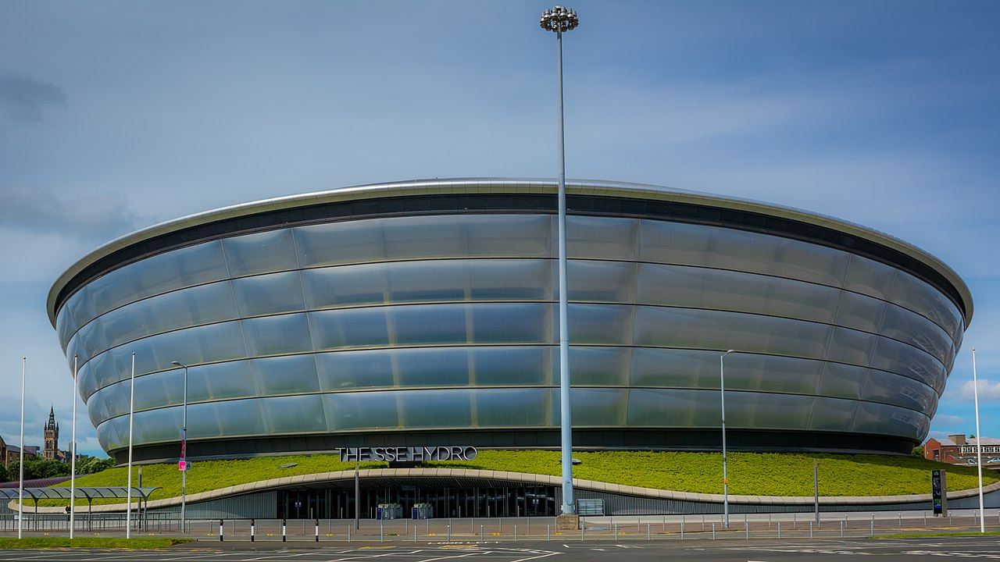
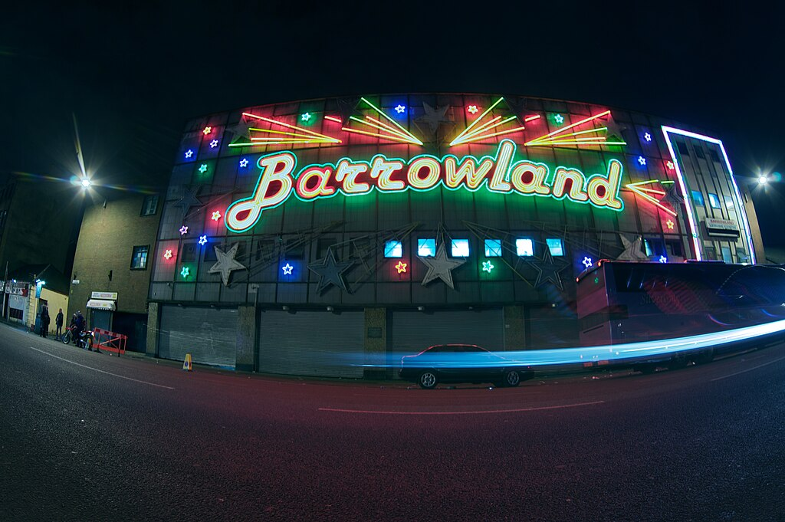

Top 5 Entertainment Venues in Glasgow
This website Will Show you the best venues to go to if your looking for a great weekend in glasgow
5 Ovo Hydro
The OVO Hydro probably the most mainstream venue on this list it has a ton of different events, the OVO Hydro is definitely one of the biggest venues in Glasgow and when its rocking its hard to beat the atmosphere cannot be beaten
Its hosted the likes of Olly Murs, Liam Gallagher and Stevie Nicks and tries to give its attendees a variety of different artists from around the world, if your looking for the biggest Glasgow can give you go to the OVO Hydro
As long as your older than 18 the Hydro Is free to enter and is located at
Exhibition way, Stobcross Rd, Glasgow G3 8YW

4
The O2 Academy
The O2, located on the periphery of city centre, is Glasgow's most famous venue. It has played host to a variety of acts ranging from Chappell Roan to Fontaines DC.
If you like the same glitz and glamour of the Hydro but in a more intimate venue, then the O2 is your place.
With an enormous standing room capacity and loads of seats, a packed-out O2 is hard to beat when it's rocking Opening Times are 7pm-11pm.
You cannot bring under 8s into the O2 Academy and if you're between 8-13 then you'll have to be with an adult 16+, The O2 Academy is located at 121 Eglinton St, Glasgow G5 9NT

3
The Garage
The last of our Glasgow clubs on the city's iconic Sauchiehall Street, The Garage is an iconic venue for Glasgow's clubbers and gig-folk.
The Garage has also had a vast roster of various performers. From Marilyn Manson to One Direction, The Garage is Glasgow's best recognized venue Opening Times are
Thurs 11pm-3 am
Fri 10:30 pm - 3 am
Sat 10:30 pm - 4 am
Most gigs are 14+ but under 16s need to bring an adult.
The club is exclusively 18+, The Garage is located at 490 Sauchiehall St, Glasgow G2 3LW.

2
King Tuts
King Tut’s Wah Wah Hut is one of the main establishments in not just Glasgow, but the whole of the UK’s music scene. With only around a 300 capacity, it feels like you’re in amongst thousands at Tut’s.
King Tut’s has given us some of the biggest and best in the UK. They’ve boasted names such as Oasis, Paolo Nutini, The Verve, and far more. Not bad for a wee venue in Glasgow, eh?
Opening times are Mon 12:00 pm - 1:00AM and then the same for tuesday, wedenday, thursday and friday
on saturday it changes to 4:00PM - 1:00AM
and on saturday its 3:00PM - 1:00AM
King Tuts is strictly 18+, King Tuts is located at 272A St Vincent St, Glasgow G2 5RL.

1
The Barrowlands
The Barrowlands, need I say anymore?
Constructed as a dance hall way back in 1934, The Barrowlands has grown into a giant of a venue, if not always in terms of size, then definitely in terms of reputation. The Barrowlands still retains a sprung dancefloor, all the better for bouncing you about. Having spent many a night in the Barrowlands, I can assure you that you'll be bouncing all the way home.
It's another venue that hosts a diverse range of acts such as Aussie punk rockers Amyl and the Sniffers and US pop star Ice Spice.
Josh Beggs of 'The Gerry Cinnamon Experience' has also played at the venue. He looked back: "I don't know what to say other than it was one of the best experiences of my life. The crowd were that loud I had to have my monitor all the way up."
Opens ever saturday and sunday 10AM to 4PM
You must be 18 or over to attend gigs at the barrowlands, The barrowlands is located at 244 Gallowgate, Glasgow G4 0TT
